| 10 | 16 | 25 | 35 | 50 | 70 | 95 | 125 |
|---|
ㆍ계산과정 :
정답 :
① 부하전류 \(I = \frac{P}{\sqrt{3}V\cos\theta} = \frac{2000 \times 10^3}{\sqrt{3} \times 6300 \times 0.8} = 229.11 [A]\)
선로의 리액턴스를 무시하면 선로의 역률은 1로 계산하며, 약산식을 적용 가능함
\[ A = \frac{30.8LI}{1000e} = \frac{30.8 \times 3000 \times 229.11}{1000 \times 300} = 70.57 [mm^2] \]
정답 : 95[mm²] 선정
| 점수 | 세부기준 |
|---|---|
| 5점 | 계산과정과 정답이 모두 맞으면 5점 획득 |
| 0점 | 계산과정과 정답에 오류가 있는 경우 |
()
가공선로에 설치하여 부하측에 지락, 단락 등의 고장이 발생하면 고장 전류를 감지하여 차단하고 일정 시간 후 자동으로 재투입한다. 다시 차단기를 투입했는데도 여전히 고장이 해소가 안 되어있으면 다시 차단기를 트립 시켜 고장구간을 분리하여 선로의 영구사고를 줄이고 고장 범위를 최소화한다.
보안상 책임 분계점에서 보수 점검 시 전로를 개폐하기 위하여 시설하는 것으로 반드시 무부하 상태에서 개방하여야 한다. 근래에는 ASS를 사용하며, 66[kV] 이상의 경우에는 이를 사용한다.
| (1) | (2) |
|---|---|
리클로저(재폐로 차단기)
선로 개폐기
| 점수 | 세부기준 |
|---|---|
| 4점 | 정답 2개 모두 맞으면 4점 획득 |
| 2점 | 정답 2개 중 1개 맞으면 2점 획득 |
| 0점 | 정답 2개 모두 틀리면 0점 |
논리식$ L = (X + + Z) ( + Y + ) $
유접점 시퀀스 회로
| 선의 접속시 표현 | 선의 비접속시 표현 |
|---|---|
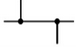 |
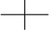 |
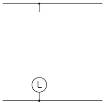
[해설] 시퀀스 / 난이도 下 (변형)
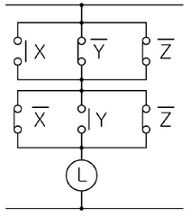
| 점수 | 세부기준 |
|---|---|
| 4점 | 시퀀스도가 모두 맞으면 4점 획득 |
| 0점 | 시퀀스도에 오류가 있으면 0점 |
ㆍ계산과정 :
ㆍ정답:
\[ R_t = [1 + a_o(T-t)]R_o \]
\[ \therefore 4500 = [1 + \frac{1}{234.5}(T-0)] \times 4000 \]
\[ \therefore T = (\frac{4500}{4000} - 1) \times 234.5 = 29.31[^{\circ}C] \]
| 점수 | 세부기준 |
|---|---|
| 5점 | 계산과정과 정답이 모두 맞으면 5점 획득 |
| 0점 | 계산과정과 정답에 오류가 있는 경우 |
PEN 도체(Protective earthing conductor and neutral conductor) ( ① )회로에서 ( ② ) 겸용 보호 도체를 말한다
PEL 도체(Protective earthing conductor and a line conductor) ( ③ )회로에서 ( ④ ) 겸용 보호 도체를 말한다.
| ① | ② | ③ | ④ | |
|---|---|---|---|---|
| 정답 |
PEN 도체(Protective earthing conductor and neutral conductor)
① (교류)회로에서 ② (중성선) 겸용 보호 도체를 말한다.
PEL 도체(Protective earthing conductor and a line conductor)
③ (직류)회로에서 ④ (선도체) 겸용 보호 도체를 말한다.
| 점수 | 세부기준 |
|---|---|
| 4점 | 소문항 4개 모두 정답이면 4점 획득 |
| 1점 | 소문항 4개 중 정답 1개 당 1점씩 획득 |
①
②
③
①
②
③
| 점수 | 세부기준 |
|---|---|
| 6점 | 소문항 6개 모두 정답이면 6점 획득 |
| 1점 | 소문항 6개 중 정답 1개 당 1점씩 획득 |
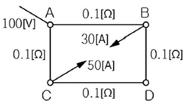
계산과정 :
정답 :
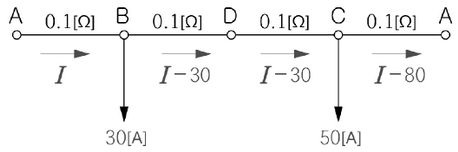
위 그림과 같이 전류 방향을 가정하면 폐회로 내의 전압강하의 합은 0이므로
\[ 0.1I + (0.1 + 0.1)(I - 30) + 0.1(I - 80) = 0 \]
\[ 0.4I = 14 \]
\[ I = \frac{14}{0.4} = 35 [A] \]
부하점 B의 전압 $V_B = V_A - IR = 100 - 35 = 96.5 [V] $
| 점수 | 세부기준 |
|---|---|
| 5점 | 계산과정과 정답이 모두 맞으면 5점 획득 |
| 0점 | 계산과정과 정답에 오류가 있는 경우 |
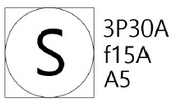
3P30A, f15A, A5
① 3P30A :
② f15A :
③ A5 :
① 3P30A : 3극 30[A] 개폐기
② f15A : 퓨즈 정격 15[A]
③ A5 : 정격전류 5[A] 전류계 붙이
| 점수 | 세부기준 |
|---|---|
| 5점 | 소문항 3개 모두 정답이면 5점 획득 |
| 2점 | 소문항 ①, ② 1개 정답일 경우 2점씩 획득 |
| 1점 | 소문항 ③이 정답일 경우 1점 획득 |
| 0점 | 모두 오답일 경우 |
F40 × 2의 그림 기호를 그리시오.
이 사무실의 실지수는 얼마인가?
계산과정 :
답: (계산 결과를 입력해야 함)
\[ 사무실 면적 = 10m × 16m = 160 m^2 \]
\[ 필요 광속 = \frac{조도 \times 면적}{조명률 \times 보수율 \times (천장 반사율 + 벽 반사율 + 바닥 반사율)} \]
\[ 필요 광속 = \frac{300 \times 160}{0.6 \times 0.7 \times (0.7 + 0.5 + 0.1)} = \frac{48000}{0.6 \times 0.7 \times 1.3} \approx 92772.73 lm \]
\[ 필요한 등기구 수 = \frac{필요 광속}{1개 등기구 광속} = \frac{92772.73}{3150} \approx 29.45 \]
따라서, 30개의 F40 × 2 등기구가 필요하다.
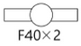
| 점수 | 세부기준 |
|---|---|
| 7점 | 소문항 3개가 모두 정답이면 7점 획득 |
| 3점 | 소문항 (3)번의 계산과정과 정답이 모두 맞은 경우 3점 획득 |
| 2점 | 소문항 (2)번의 계산과정과 정답이 모두 맞은 경우 2점 획득 |
| 2점 | 소문항 (1)번이 정답인 경우 2점 획득 |
①
②
③
| 점수 | 세부기준 |
|---|---|
| 5점 | 답 3개가 모두 맞으면 5점 획득 |
| 3점 | 답 3개 중 2개가 정답이면 3점 획득 |
| 1점 | 답 3개 중 1개가 정답이면 1점 획득 |
| 0점 | 정답에 오류가 있는 경우 |
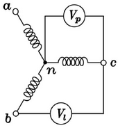
(1) 제3고조파 전압(\(V_3\))을 구하시오.
계산과정 :
답:
계산과정 :
답:
[해설] 단순 계산형 / 난이도 中(기출)
\(V_p = \sqrt{V_1^2 + V_3^2}, 150 = \sqrt{V_1^2 + V_3^2}\) …… ①
선간 전압 \(V_2\)에는 제3고조파분이 존재하지 않으므로
\[ V_2 = \sqrt{3} V_1, 220 = \sqrt{3} V_1 …… ② \]
식 ①, ②에서 \(V_1 = \frac{220}{\sqrt{3}} = 127.02 [V]\)
\[ \therefore V_3 = \sqrt{150^2 - V_1^2} = \sqrt{150^2 - 127.02^2} = 79.79 [V] \]
정답: 79.79[V]
계산과정
\[ 왜형률 = \frac{\text{전고조파의 실효값}}{\text{기본파의 실효값}} = \frac{V_3}{V_1} = \frac{79.79}{127.02} = 0.6282 = 62.82 [\%] \]
정답 : 62.82[%]
| 점수 | 세부기준 |
|---|---|
| 5점 | 소문항 (1), (2)의 계산과정과 정답이 모두 맞으면 5점 획득 |
| 3점 | 소문항 (1)의 계산과정과 정답이 모두 맞으면 3점 획득 |
| 2점 | 소문항 (2)의 계산과정과 정답이 모두 맞으면 2점 획득 |
| 0점 | 소문항 2개의 계산과정과 정답에 오류가 있는 경우 |
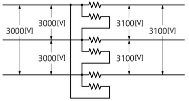
\[ V_2 = -\frac{V_1}{2} + \sqrt{\frac{V_1^2}{3} - \frac{V_1^2}{12}} = -\frac{3000}{2} + \sqrt{\frac{3100^2}{3} - \frac{3000^2}{12}} = 66.31 [V] \]
\[ 자기 용량 = \frac{3V_2}{\sqrt{3}V_1} \times 부하 용량 = \frac{3 \times 66.31}{\sqrt{3} \times 3100} \times 200 = 7.41 [kVA] \]
| 점수 | 세부기준 |
|---|---|
| 5점 | 소문항 2개의 계산과정과 정답이 모두 맞으면 5점 획득 |
| 3점 | 소문항 (1)의 계산과정과 정답이 모두 맞으면 3점 획득 |
| 2점 | 소문항 (2)의 계산과정과 정답이 모두 맞으면 2점 획득 |
| 0점 | 계산과정과 정답에 오류가 있는 경우 |
| 종류 | 설명 |
|---|---|
| (가) | 계통, 설비 또는 기기의 한 점과 접지극 사이의 도전성 경로 또는 그 경로의 일부가 되는 도체 |
| (나) | 감전에 대한 보호를 목적으로 기기의 한 점 또는 여러 점을 접지하는 것 |
| (다) | 기기나 계통을 개별적 또는 공통으로 접지하기 위하여 필요한 접속 및 장치로 구성된 설비 |
(1) 계산과정: 접지 저항값 \(R_E = \frac{1}{2}(86 + 80 - 156) = 5 [\Omega]\)
| 종류 | 설명 |
|---|---|
| (가) 접지 도체 | 계통, 설비 또는 기기의 한 점과 접지극 사이의 도전성 경로 또는 그 경로의 일부가 되는 도체 |
| (나) 보호 접지 | 감전에 대한 보호를 목적으로 기기의 한 점 또는 여러 점을 접지하는 것 |
| (다) 접지 시스템 | 기기나 계통을 개별적 또는 공통으로 접지하기 위하여 필요한 접속 및 장치로 구성된 설비 |
| 점수 | 세부기준 |
|---|---|
| 6점 | 소문항 (1), (2) 모두 정답이면 6점 획득 |
| 3점 | 소문항 (1)의 계산과정과 정답이 모두 맞으면 3점 획득 |
| 3점 | 소문항 (2)의 분류 3개 중 1개당 1점씩 획득 |
[조건]
사용하는 전선은 모두 NR 4.0[\(mm^2\)]이다.
박스는 모두 4각 박스를 사용하며, 기구 1개에 박스 1개를 사용한다. 2개 연등인 경우에는 각 1개씩을 사용하는 것으로 한다.
전선관은 콘크리트 매입 후강 금속관이다.
층고는 3[m]이고, 분전반의 설치 높이는 1.5[m]이다.
3로 스위치 이외의 스위치는 단극 스위치를 사용하며, 2개를 나란히 사용한 개소는 2개소이다.
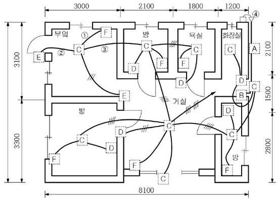
A: 적산전력계(전력량계), B: 분전반(전등용), C: 백열전등, D: 덤블러 스위치, E: 덤블러 스위치(3로 스위치), F: 15[A] 콘센트
| A | B | C | D | E | F |
|---|---|---|---|---|---|
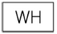 |
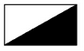 |
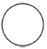 |
①
②
③
도면의 ④에 대한 그림 기호의 명칭은 무엇인가?
본 배선 평면도에 소요되는 4각 박스와 부싱은 몇 개인가?(단, 자재의 규격은 구분하지 않고 개수만 산정한다.)
| A | B | C | D | E | F |
|---|---|---|---|---|---|
① 2가닥 ② 3가닥 ③ 4가닥
케이블 헤드
4각 박스 25개, 부싱 46개
| 점수 | 세부기준 |
|---|---|
| 12점 | 소문항 4개가 모두 정답이면 12점 획득 |
| 6점 | 소문항 (1)의 분류 6개 중 정답 개당 1점씩 획득 |
| 3점 | 소문항 (2)의 분류 3개 중 정답 1개당 1점씩 획득 |
| 2점 | 소문항 (4)의 분류 2개 중 정답 1개당 1점씩 획득 |
| 1점 | 소문항 (3)이 정답이면 1점 |
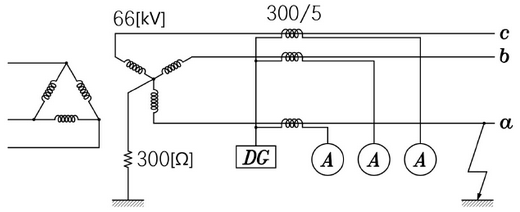
계산과정 :
정답 :
계산과정 :
정답 :
계산과정 :
정답 :
계산과정 :
정답 :
계산과정: $I_g = = = 127.02 [A] $
지락 계전기 DG에 흐르는 전류: $I_{DG} = 127.02 = 2.12 [A] $
계산과정: 전류계 A에는 부하 전류와 지락 전류의 합이 흐르므로 \[ I_a = \sqrt{ \frac{20000}{\sqrt{3} \times 66 \times 0.8} \times (0.8 - j0.6) + \left( \frac{66 \times 10^3}{\sqrt{3} \times 300} \right)^2 } = 329.24 [A] \] \[ A = 329.24 \times \frac{5}{300} = 5.49 [A] \]
| 점수 | 세부기준 |
|---|---|
| 6점 | 소문항 4개의 계산과정과 답이 모두 맞으면 6점 획득 |
| 2점 | 소문항 (2), (3)의 계산과정과 답이 모두 맞으면 2점씩 획득 |
| 1점 | 소문항 (1), (4)의 계산과정과 답이 모두 맞으면 1점씩 획득 |
| 0점 | 계산과정과 답에 모두 오류가 있는 경우 |
①
②
③
[해설] 단답 암기형 / 난이도 中 (기출)
| 점수 | 세부기준 |
|---|---|
| 6점 | 소문항 3개 모두 정답이면 6점 획득 |
| 2점 | 소문항 3개 중 정답 1개당 2점씩 획득 |
| 0점 | 답에 모두 오류가 있는 경우 |
| a접점 | b접점 | 출력 |
|---|---|---|
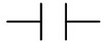 |
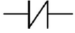 |
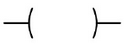 |
| 차례 | 명령 | 번지 |
|---|---|---|
| 0 | STR | P00 |
| 1 | OR | P01 |
| 2 | STR NOT | P02 |
| 3 | OR | P03 |
| 4 | AND STR | - |
| 5 | AND NOT | P04 |
| 6 | OUT | P10 |
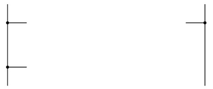
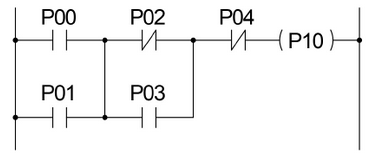
| 점수 | 세부기준 |
|---|---|
| 5점 | PLC 회로도가 정답인 경우 5점 획득 |
| 0점 | PLC 회로도에 오류가 있는 경우 |
<차단기의 정격 용량>
| 차단용량 [MVA] | 50 | 100 | 200 | 300 | 500 | 750 |
|---|
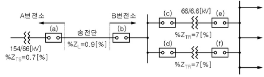
· 계산과정 :
정답 :
[해설] 단순 계산형 / 난이도 중 (변형)
계산과정 :
① 고장점까지의 %임피던스 \[ \%Z = \%Z_{TS} + \%Z_L = 0.7 + 0.9 = 1.6 [\%] \]
② 단락 용량 \(P_s = \frac{100}{\%Z} \times P_n = \frac{100}{1.6} \times 10 = 625 [MVA]\)
차단기의 차단 용량은 단락 용량보다 커야 하므로 표에서 750[MVA] 선정
| 점수 | 세부기준 |
|---|---|
| 5점 | 계산과정과 정답이 모두 맞으면 5점 획득 |
| 0점 | 계산과정과 정답에 오류가 있는 경우 |